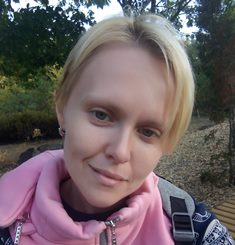

Oleksandra Logvinenko
Curriculim Vitae
QA egineer
Personal information
State: Ukraine
City: Cherkassy
Date of birth: 01-07-1983
Phone: +380 93 657 64 29
Email: aleksandra6778@ukr.net
About me
I am looking for a job in a new field for myself. Easy to learn, communicative. I have quite a lot of experience working with people in the retail industry.
Education
2001-2005: KIRUE Faculty of Design
Courses
2021: BeQaToday
Skills
- Basic knowledge of software testing principles
- Basic knowledge of SDLC
- Basic knowledge of testing processes
- Basic knowledge of SQL
- Basic knowledge of HTML
Languages
- Ukrainian: native
- Russian: native
- English: beginner
Hobbies
- Reading
- Cooking
- Hand Made
|